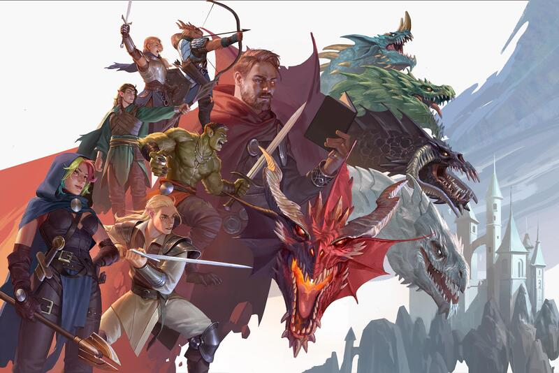

This website is about the games I enjoy and why I enjoy them.
This website is about some of my favorite games and what makes them fun. I was raised on games, and this list will go over some of my favorites, and try to explain why I enjoyed them so much, as to encourage you to try them and enjoy them too.
It'll include a videos of the some of the game's trailers at the bottom if you'd prefer to watch those instead.
Stardew Valley
Katana Zero
Disco Elysium
Dungeons and Dragons

Barotrauma
Armored Core VI: Fires of Rubicon
The House in Fata Morgana
Metal Gear Solid V
Slay the Princess
Hollow Knight